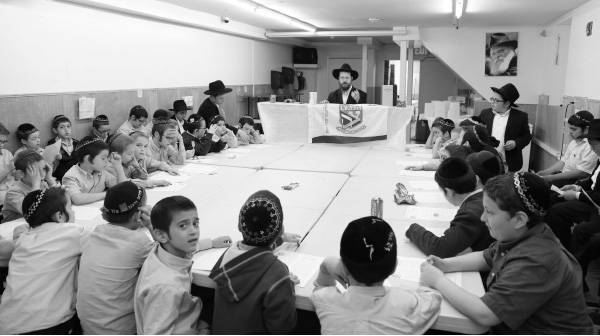

Ohr Menachem the Light of a Chassidishe Chinuch
This is the first and only elementary school yeshiva in the United States which continues to operate during the summer months. The children are happy to be learning in a school that insists upon following the Rebbe’s horaos. * This school, which opened a few years ago with just thirty children, has become a significant educational institute with nearly three hundred talmidim!

As Shavuos approaches, we are reminded that we received the Torah thanks to our children being the guarantors. One of the main mitzvos of chinuch entails a father teaching Torah to his son. These days, before we merit the complete Geula, the hardships of galus are at an all-time high, bringing in their wake the most difficult tests, which make it ever more challenging to lead a proper Jewish life. The greatest threat appears to be aimed at the younger generation, at the chinuch of Jewish children.
More than ever, strong winds of exposure to outside influences and modernization are blowing within the religious camp, and sadly we are seeing the signs of this in our own communities.
This makes the existence of Ohr Menachem in Crown Heights all the more encouraging. If you take a peek into the classrooms, you will see children davening slowly and sweetly and learning Torah diligently. What a pleasure it is to listen in to their pure voices as they review their p’sukim or the words of the davening.
BEAUTIFUL TORAH IN A BEAUTIFUL VESSEL
Anyone who is involved in chinuch in some form or another, knows that the Chassidishe atmosphere in Ohr Menachem, the high level of learning, the individual attention for each child, the chinuch for hiskashrus to the Rebbe – have all revolutionized chinuch in Crown Heights.
Without spotlights and without a state-of-the-art building, on one of the quietest streets in the neighborhood, what began as a small initiative on the part of some parents, with thirty boys, has grown into a significant yeshiva with nearly three hundred children.
Last year, due to the growing demand, the preschool children were moved to a new and spacious building that was built as a school by the city of New York and given to Ohr Menachem to use. Here, and in the other buildings used by the higher grades, you can see how much work the hanhala gashmis is investing to maintain and beautify the school. The preschool classrooms provide a wonderful atmosphere for learning.
What caught my eyes is the special relationship between the students and their teachers. There is a family atmosphere here. In today’s world, it is not necessarily a matter of course that students respect and esteem their teachers. An outsider may not appreciate it, but there is a unique sense of harmony that pervades the place.
In conversations I had with members of the hanhala, I heard about some of the foundational principles that inform the educational philosophy of the school: the teachers are all Chassidish and yerei Shamayim; no more than eighteen children per class; there is an emphasis on good middos and Chassidishe sensibilities, and all members of the staff have a weekly shiur on the D’var Malchus.
When I tried to find out what makes this school unique and why it was necessary to open yet another school when there are wonderful mosdos, Oholei Torah and Lubavitcher Yeshiva, I did not hear a negative word about other schools. On the contrary, I was told they are all good. If so, why did Ohr Menachem open?
The idea of opening this school was that of parents who were looking for a school that would be more particular about matters of yiras Shamayim and Chassidishkait. To achieve this, they set the bar high with demanding entrance requirements. It is interesting that there are parents who changed their way of life to be more Chassidish so that their children would be accepted into the school.
What is “chinuch al taharas ha’kodesh?”
“Our approach is ‘chinuch al taharas ha’kodesh,’ says R’ Menachem Mendel Yuzewitz, menahel of the school. “Over the years, the phrase has become overused and we want to go back to the original meaning of the term. Our goal is to stick as closely as we can to the value known as ‘taharas ha’kodesh.’
“There is a sugya in Meseches Chagiga which is about ‘a Kohen or chaver who eats Chulin al taharas ha’kodesh.’ When the Mikdash stood, even food that was considered Chulin (ordinary) was eaten by people on the level of purity which is required for kodshei kodshim, so they would always be prepared to eat food b’tahara, and also, as an extra shmira.
“I don’t know whether the concept of ‘chinuch al taharas ha’kodesh’ is borrowed from there or not, but we can learn a lot from this. First of all, it is imperative to adopt a positive approach, not just one of negative refraining. In other words, in addition to avoiding ideas from the outside, worldly assumptions, secular studies, etc. we need to invest most of our energy into educating children to a Jewish, Chassidish way of life.
“It is not enough that the curriculum consists only of Torah and no secular subjects, but the children’s entire day needs to be permeated with tahara and k’dusha; namely that the atmosphere be one of Chassidishe yiras Shamayim. Whether during recess, meals, on the bus – the children should be talking about learning contests or Chassidishe dates, not nonsense. ‘In all your ways, know Him,’ this is the chinuch that the Rebbe chose for his children, ‘dem Rebbe’ns kinder.’”
STAFF AND HANHALA
R’ Yuzewitz, himself born in Crown Heights, says that to achieve this they work hard to recruit staff members who, aside from their abilities to run a classroom and teach, are role models of middos tovos and yiras Shamayim. “That is the only way we can implant the foundations of Toras Ha’chassidus and Darkei Ha’chassidim in the children.”
There are special learning and conduct contests, which instill a spirit of Chassidishkait and living a life of halacha, at home and at recess. “We have learned that the best recipe for warding off negative influences such as the Internet is to strengthen emuna, which children are drawn to naturally.”
All the educational and Chassidish activities in the school are supported by the Vaad HaChinuch, which consists of R’ Aharon Ginsberg, R’ Yisroel Greenberg, R’ MM Hendel, R’ MM Yuzewitz, and R’ MM Scharf. The members of the vaad meet now and then to discuss the chinuch of each class as well as specific children who need special attention. General spiritual questions are decided upon by the Vaad HaRuchni, which consists of R’ Sholom Dovber Lipsker, R’ Refael Wilschansky, and R’ Chaim Serebryanski (the latter just joined after the passing of R’ Yitzchok Springer a”h who was a member of the Vaad HaRuchni for many years and contributed greatly towards the Chassidishe shaping of the school).
R’ Yuzewitz takes this opportunity to thank the members of the Vaad HaChinuch as well as the members of the Vaad HaGashmi, who dedicate many hours of their time to move the school forward in the ways of Chassidus. “When educational decisions are made in a forum like this, of Chassidishe educators, whose only desire is to do what the Rebbe wants, I feel confident with their decisions.”
EDUCATIONAL GOALS
One cannot but be impressed by the simcha radiating from the faces of the children. Those boys whose learning style is less “book oriented” are given a special curriculum, appropriate for them, which is prepared by their devoted teachers.
“The basic goal of the school is to provide each talmid with the tools for him to progress with greater ease and make strides in his learning.”
The Rebbe MH”M says that real chinuch is when afterward, the one being educated no longer needs the help of the educator. This is true for every grade and age. Ohr Menachem sets out a clear progress chart for each of the classes, and moves its students forward with the challenges they are ready to handle.
One of the painful realities about young people in the United States is that when a young child is not successful enough in reading and writing lashon ha’kodesh, his learning suffers tremendously in his yeshiva years. This is why the hanhala sees it as a high priority to ensure that every child, without exception, masters lashon ha’kodesh by the end of pre-1A. So when they enter first grade, they know how to read fluently and can focus on learning.
The children’s health being no less important, for recess the children have access to a big park right near the school, which other children in Brooklyn can only dream about.
LIVING WITH MOSHIACH
“Nowadays,” declared R’ Yuzewitz, “chinuch to hiskashrus to the Rebbe is expressed in a chayus for inyanei Moshiach and Geula. Chinuch is about preparing for the Geula. When this is the approach, you see children who are excited and who ‘live with’ the constant anticipation of the hisgalus of the Rebbe MH”M.
“Even when a child needs to be rebuked and he needs to improve his behavior, it is important to remind him of the time we are living in and how in another moment he will be pointing and saying, ‘There is the Rebbe.’ That is the reality they live and which they talk about amongst themselves. To the children, it’s not just a sicha of the Rebbe. It’s the reality.
“For example, a few months ago, the children in seventh grade decided on their own to have a weekly shiur in the D’var Malchus. Every week, they invite one of the teachers to give them a shiur, and afterward, they have a contest with prizes. It is all arranged by the members of the class.
“In addition to proclaiming Yechi after davening and at assemblies, the teachers instill in their students the sense that the longing for the hisgalus of the Rebbe needs to be something that affects every aspect of our being and our behavior. We accustom the children to write to the Rebbe often, to report to the Rebbe about the good things they do to hasten the Geula. In general, we teach the children to always think – what does the Rebbe want of me, in every detail, and how can I bring the Geula.”
On the night of Simchas Torah 5752, the Rebbe said that when you see a Jewish child, you are seeing Moshiach, and in Crown Heights you can point at a child like this who learns in Ohr Menachem.
TO BELIEVE IN THE TALMIDIM LIKE THE REBBE BELIEVES IN US!
One of the things that I think we need to learn from how the Rebbe taught us, his Chassidim and talmidim, is on the one hand, that the Rebbe believes in us. He sees and brings out our good qualities so that we attain levels that even we did not believe we could achieve. On the other hand, the Rebbe expects much more of us than we actually do, and it is very hard to satisfy him since we operate based on our lower assessment of ourselves.
This is how I try to look at a talmid:
First, to bring his uniqueness and unique qualities to his attention until he feels and understands it – and –
Secondly, to demand of him, being that he is capable, to behave and learn accordingly.
It’s not at all easy! It requires tremendous effort and it is usually a long process. But just as the Rebbe doesn’t despair of us, we cannot, G-d forbid, despair of the Rebbe’s children.
SCHOOL IN THE SUMMER
It happens every year. It’s the end of Sivan and summer is around the corner. As the rest of the family is getting into end of the year mode in anticipation of going to the Catskills, schools are closing and there is an air of excitement as children look forward to summer vacation and going to camp.
In the midst of the pre-summer frenzy, two young boys walk down the street, talking amongst themselves in Yiddish a bit loudly, although in refined tones, “So how many prakim of Tanya do we need to learn by heart in order to be the Sar HaElef in ‘Der Rebbe’s Armei’ contest?”
A curious passerby asks, “What yeshiva do you go to?”
They straighten up proudly and answer in unison, “Ohr Menachem!”
Having school in the summer was a tough hurdle, mainly because of the parents, says the menahel. “The children, who are educated throughout the year that we must obey the Rebbe’s horaos, accept the fact that they continue learning in school while their friends in other schools have vacation. However, the adults got used to going to the country and now they are ‘stuck’ in the city with their kids.
“However, since these are Chassidishe parents, after all, who want to do what the Rebbe asks, we called them to a meeting and presented the Rebbe’s sichos to them on this subject. After showing them a video of a sharp sicha of the Rebbe, in which the Rebbe says that the Torah is our life and when we take a child on vacation it is as though we are taking life from him, their opinions changed.”
Beis Moshiach (staff). "Ohr Menachem the Light of a Chassidishe Chinuch." Beis Moshiach, no. 879 (May 9, 2013).